Air Jordan XI
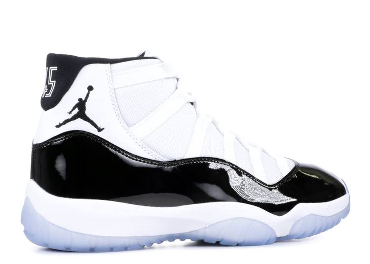
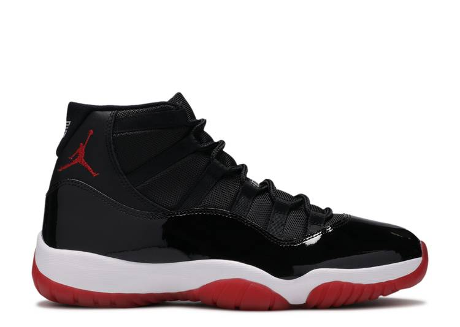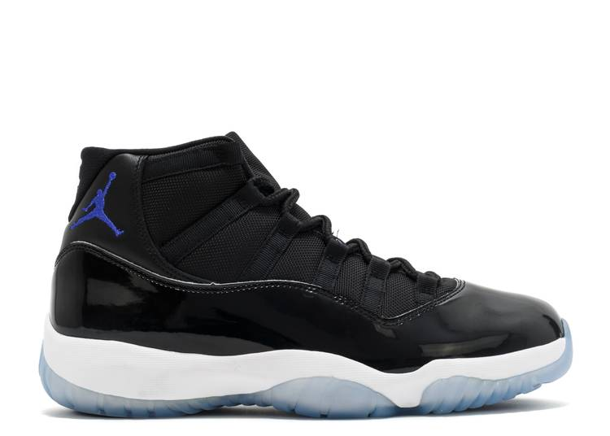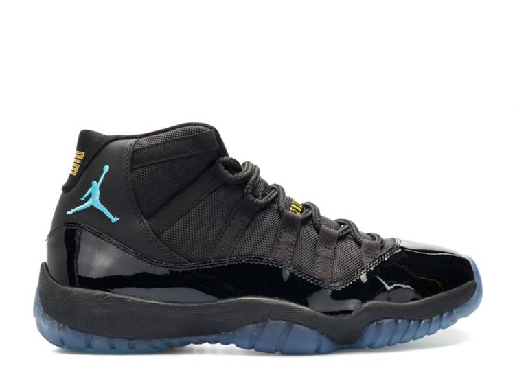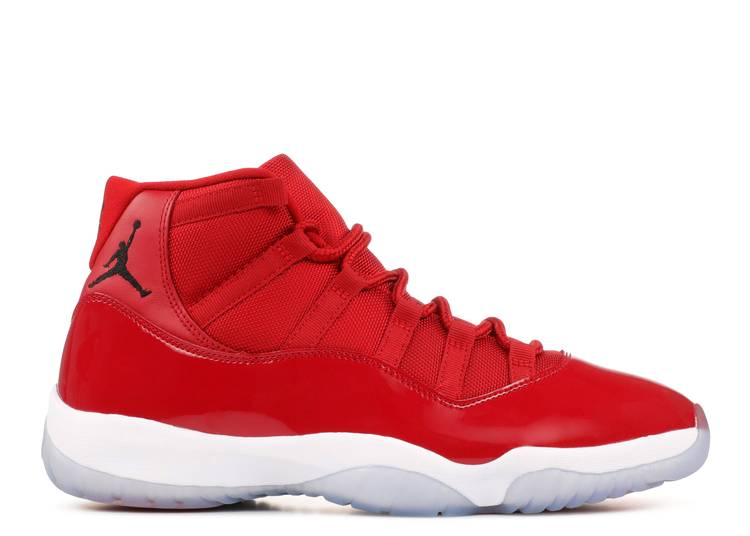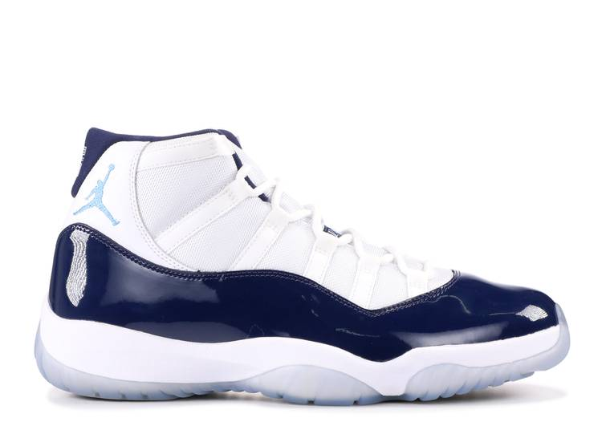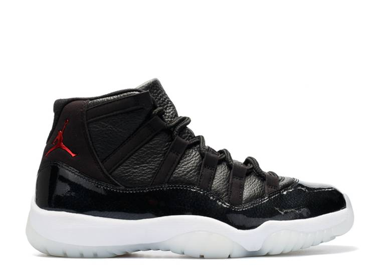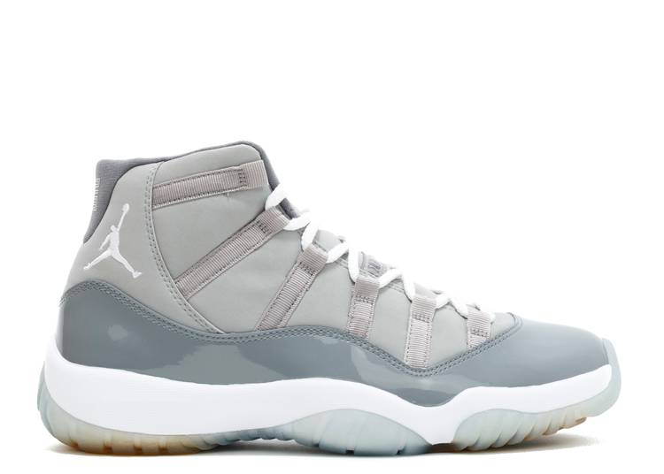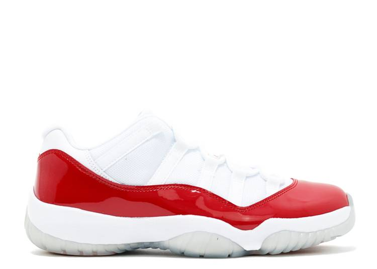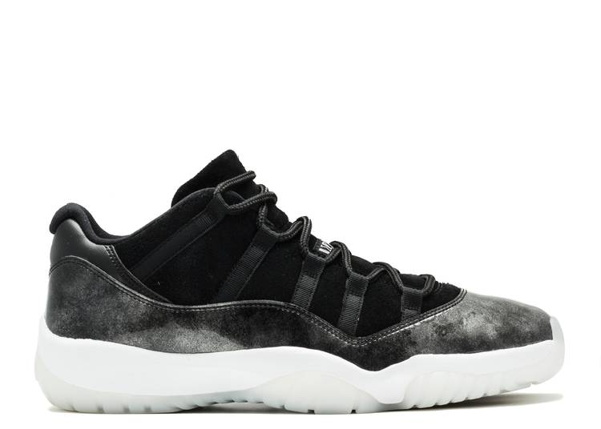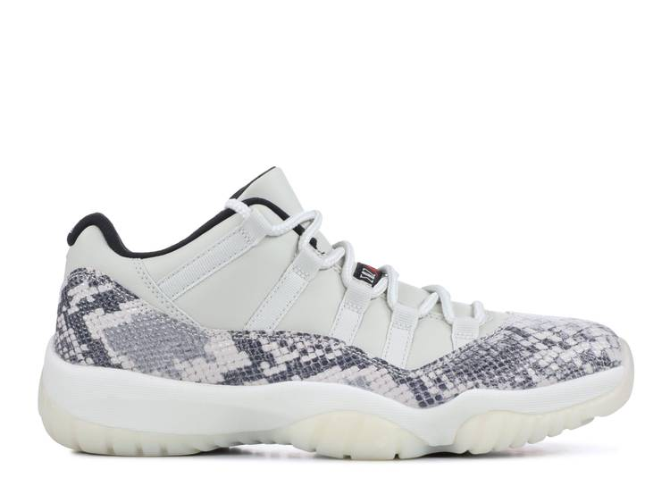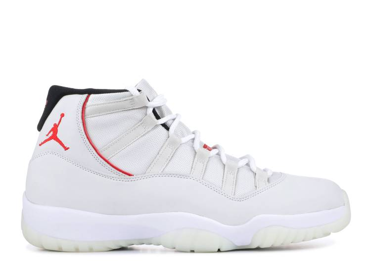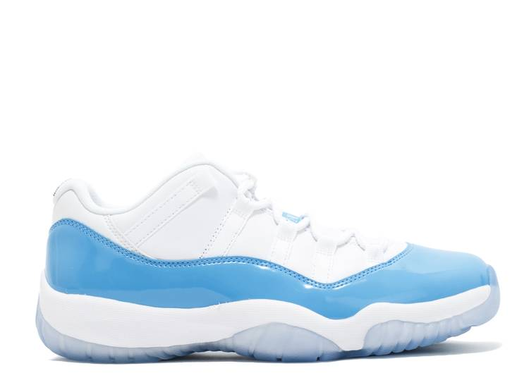
Air Jordan XI
Arguably the most popular Air Jordan style of all-time, here's a look at the lineage of the Air Jordan 11. In 1995, three colorways of Michael Jordan's 11th signature sneaker released in both the iconic patent leather trimmed mid-cut and an elephant print trimmed low-cut version known as the IE. Five years later, the sneaker returned for its first retro run with new and OG colorways of the mid-top as well as low-tops that featured patent leather and snake skin. The Air Jordan 11 also served as the motivation for Jordan Brand to move Air Jordan Retro releases to Saturday as students often skipped school and cut class to get their hands on a pair. In 2003, the original low-top IE version returned in both original colorways. In 2006, Jordan Brand released their first ever two-shoe pack with "Defining Moments" pack which featured a gold-accented version of the Air Jordan 11 "Concord." The Air Jordan 11 featured once again in a two-shoe pack as part of the Air Jordan 11/Air Jordan 12 Countdown Pack which released in 2008. In 2009, Jordan Brand officially began the Air Jordan 11 Retro holiday release tradition, which has gone on to result in the return of a number of OG colorways as well as new styles like the "Gamma Blue," "Win Like '96," "72-10," and more.
What materials are used in the Air Jordan XI?